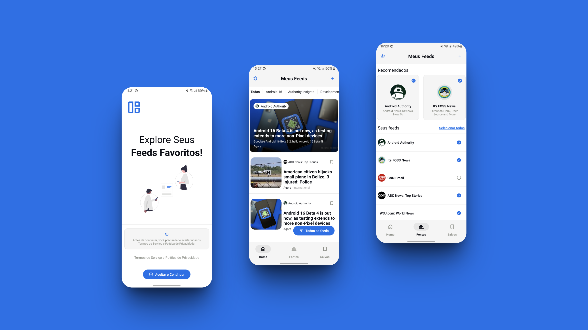

Encontre seus feeds favoritos!
Meus Feeds é um leitor de RSS que permite aos usuários adicionar links de sites desejados para receber feeds RSS. Com lembretes diários, o aplicativo envia notificações com resumos dos últimos artigos dos feeds favoritos. Os dados são armazenados localmente no dispositivo, e os usuários podem compartilhar artigos em redes sociais.
O Meus Feeds usa o Feedsearch!
Feedsearch fornece uma API simples para pesquisar sites de feeds RSS, Atom e JSON. O objetivo de longo prazo do Feedsearch é fornecer um repositório abrangente e acessível ao público de informações de feed. Você pode acessar o site do para encontrar novos feeds.
Meus Feeds
Meus Feeds é um aplicativo destinado a simplificar a experiência de leitura de conteúdos RSS para os usuários. Com uma interface intuitiva, os usuários podem facilmente adicionar links de sites que desejam seguir, permitindo ao aplicativo consultar a API Feedsearch para verificar a presença de feeds RSS nas URLs fornecidas. Uma vez identificados, esses feeds são salvos e adicionados à lista de leitura do usuário.
Um dos recursos mais úteis do Meus Feeds é o sistema de lembretes. Os usuários podem configurar o aplicativo para enviar notificações diárias em um horário específico, comumente definido para às 8 horas da manhã (embora seja personalizável), apresentando um resumo dos últimos artigos dos feeds adicionados como favoritos. Essas notificações fornecem uma visão geral do conteúdo mais recente, permitindo que os usuários decidam se desejam ler mais ou não.
Ao clicar na notificação, os usuários podem ser redirecionados para o aplicativo, onde podem explorar os artigos completos em suas categorias correspondentes. Embora nem todos os feeds forneçam categorias para seus artigos, o aplicativo organiza-os da melhor forma possível para facilitar a navegação.
Todos os dados relacionados aos links inseridos pelo usuário e aos feeds retornados pela são armazenados localmente no dispositivo do usuário. Isso garante a privacidade e a segurança dos dados, pois não há sincronização com servidores externos.
Em resumo, é um aplicativo abrangente que simplifica o processo de consumo de conteúdo RSS, fornecendo uma maneira conveniente e personalizável de acompanhar as últimas notícias e artigos dos sites favoritos dos usuários, tudo isso com foco na privacidade e na facilidade de uso.